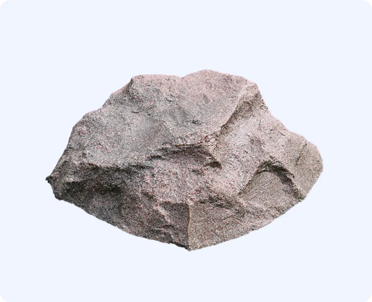

Камни-валуны для декора
Камень-валун М-02, 900*760*350мм
Цена и наличие
- 1 шт.462,5 BYN / шт.В наличии
Данные на 23.11.2026.
Характеристики
- Габариты
- 900*760*350 мм
- Диаметр
- 80 см
- Вес
- 5-8 кг
- Цвета
- Розовый, красно-черный, серый гранит, базальт, серый мрамор, зеленый змеевик и др.
Описание
Валунами, как правило, называют небольшие обломки благородного натурального камня различных горных пород, которые имеютособую округлую форму и хорошо обточены водой. Валуны зачастую собирают вручную вдоль озёр, рек и берегов, а затемтщательно сортируют их в зависимости от формы, размера и типа камня.
КАМЕНЬ-ВАЛУН М-02, 900*760*350 Валунами, как правило, называют небольшие обломки благородного натурального камня различных горных пород, которые имеютособую округлую форму и хорошо обточены водой. Валуны зачастую собирают вручную вдоль озёр, рек и берегов, а затемтщательно сортируют их в зависимости от формы, размера и типа камня. Камни-валуны чаще всего представляют собой некую имитацию выступающих из мягкой земли массивных гранитных валунов и в основном предназначены для индивидуального декорирования кессонов, канализационных люков, некрасивых пней, скважин, септиков, выступающего бетона, насосного оборудования, стальных конструкций и прочих не очень некрасивых мест на вашем ландшафте. Камни всегда полые внутри и именно это позволяет вам скрыть абсолютно любой выступающий объект. Масса такого камня-валуна, закрывающего стандартный люк примерным диаметром 80 см, составляет от 5 до 8 кг. Устанавливать такой декоративный камень-валун для ландшафта не вызывает абсолютно никаких затруднений, вдобавок они достаточно прочные и запросто выдерживают вес даже крупного человека. Искусственные камни-валуны зачастую состоят из двух деталей-компонентов. Сам каркас выполнен из специального стеклопластика – экологически безопасного и прочного материала, из которого сегодня делают различные детские площадки, элементы кузова машин, аттракционы. Облицовка данного камня – натуральная гранитная мелкая крошка разнообразных цветов. Наши камни-валуны можно с легкостью использовать круглый год, ведь им не страшен ни снег, ни мороз, ни град, ни дождь. Все изделия зачастую выпускаются в следующих цветовых вариантах: розовый, красно-черный, серый гранит, базальт, серый мрамор, зеленый змеевик и др. Цвет камня можно запросто заказать согласно уже готовой палитры цветов.